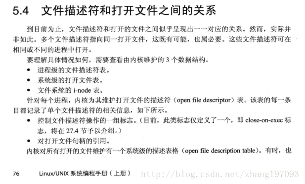
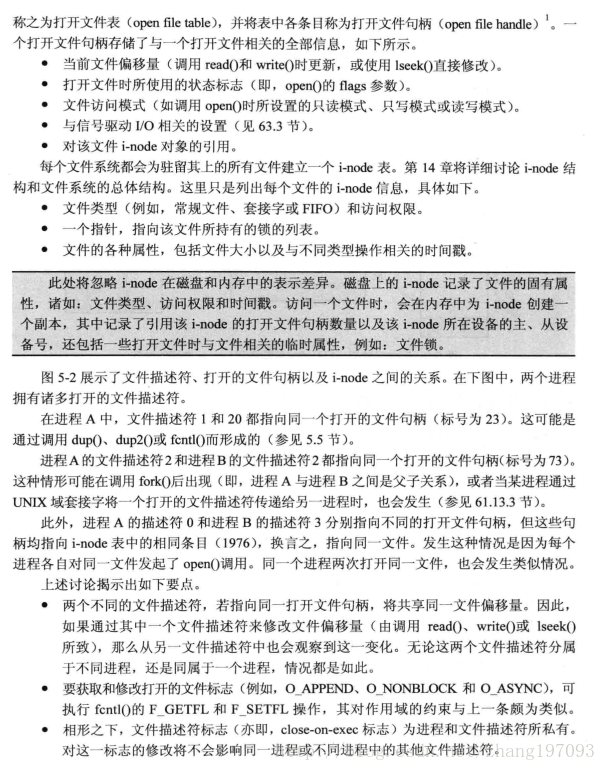

linux shell flock文件锁的用法及注意事项
为了保障多进程对同一个文件进行读写时不出现乱序，我们需要在写入文件时对文件加锁，然后在写完文件后对文件解锁.
在shell中我们可以使用 flock 来对文件进行枷锁。
flock 有三种使用形式:
flock 文件或目录 命令 [参数...]
这是flock最简单的使用方式, 它会执行
命令 参数...并在命令执行期间对文件或路径加排他锁，然后在命令执行完毕后再释放该锁.但这种形式只能执行单个命令，且无法在命令中进行管道和IO重定向操作
flock 文件或目录 -c command
这种方式其实就是
flock 文件或目录 bash -c "command"的简写形式这种形式理论上可以在
command中写任意复杂的表达式，但是由于是通过bash -c来运行的，它的运行环境并不是在当前shell中，因此并不能修改当前shell中的变量flock 文件描述符;commands;flock -u 文件描述符
这种方式对文件描述符进行加锁，并且在当前shell环境中执行完任意复杂的commands后通过
-u选项对文件描述符进行解锁。另外，当文件描述符被关闭后，flock也会自动进行解锁。这种方法最灵活，但使用起来不太方便。
使用flock需要注意几点:
使用flock对文件加的锁是劝告锁，而不是强制锁,其他程序依然可以在不用flock的情况下写如该文件,比如
flock /tmp/t sleep 5& date |tee -a /tmp/t # 会执行成功，而且会把date写入到 /tmp/t 中，但 flock /tmp/t -c "date |tee -a /tmp/t" # 则会等待sleep命令执行完，锁释放后才把date写入到 /tmp/t 中 echo "------------------------" cat /tmp/t
2019年 02月 14日 星期四 13:07:55 HKT 2019年 02月 14日 星期四 13:08:00 HKT ------------------------ 2019年 02月 14日 星期四 13:07:55 HKT 2019年 02月 14日 星期四 13:08:00 HKT
当flock与管道文件连用时可能会产生死锁，例如下面这段代码
# 创建命名管道 mkfifo /tmp/ff exec 99<> /tmp/ff # 创建生产进程往管道中写入数据 (while : do flock /tmp/ff -c 'seq 1 10 > /tmp/ff' done ) & # 创建消费进程从管道读取数据 (while : do flock /tmp/ff -c 'read i </tmp/ff;echo $i' done ) & wait
当消费者进程消费速度快于生产进程时就会发生下面步骤:
- 消费者进程持有锁0
- 消费者进程从管道读取消息，被阻塞
- 生产者往管道发送数据前需要先获取锁0,但是该锁被消费者进程持有，导致生产者也被阻塞。
flock创建的锁是和文件描述符表相关联而不是fd相关联，也就是说如果通过fork或dup复制了文件，那么通过这两个fd都能操作这个锁。(例如通过一个 fd 加锁，通过另一个 fd 可以释放锁) 类似的，只关闭其中一个fd并不会释放锁(因为file结构并没有释放)，只有关闭所有复制出的 fd ，锁才会释放。(这段描述参见https://blog.csdn.net/zy531/article/details/51731227)
例如，相对上面的代码，下面这段代码就不会死锁
# 创建命名管道 # mkfifo /tmp/ff exec 99<> /tmp/ff # 创建生产进程往管道中写入数据 (while : do flock /tmp/ff -c 'seq 1 10 > /tmp/ff' sleep 1 done ) & # 创建消费进程从管道读取数据 (while : do flock /tmp/ff -c 'read i </tmp/ff;echo $i' done ) & wait
关于linux内核对于打开文件的处理机制，可以以下摘自《linux/unix系统编程手册》一书第5.4节的图片

